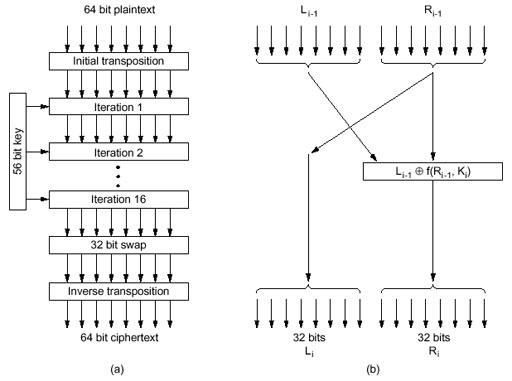

Hieronder ziet u het algemene DES algoritme:

DES is een systeem dat door IBM is ontwikkeld. Het is in de industrie veel gebruikt. Het is, zoals het hier in zijn eenvoudige vorm is voorgesteld, niet meer veilig omdat de sleutellengte aanvallen van het type brute kracht niet meer kunnen weerstaan! Tegenwoordig zijn computers nu eenmaal veel krachtiger dan in de jaren 1970.
De klare tekst wordt vercijferd in blokken van 64 bits (8 bytes). De sleutel is 56 bits lang. Acht bytes zouden 64 bits kunnen voorstellen, maar 8 van de 64 bits zijn pariteitsbits, zodat er slechts 56 bits echt te kiezen zijn!
Het algoritme heeft 19 stappen, waarvan 16 iteratiestappen. Deze zijn identiek van opbouw en kunnen in deel (b) van de figuur bestudeerd worden.
De eerste stap is een transpositiestap die functie is van de sleutel. De laatste stap is de inverse transpositiestap.
De voorlaatste stap verwisselt de meest linkse 32 bits met de meest rechtse.
Men kan opmerken dat wanneer men de begin- en eindpermutatie zou weglaten, juist de Feistel procedure zou overblijven.
Een figuur met de permutatietabellen en een gedetailleerde beschrijving van de iteratiestappen kan men op de volgende pagina's vinden.
Een voordeel is dat ontcijfering met dezelfde sleutel als de vercijfering kan worden uitgevoerd. Men moet gewoon de volgorde van de stappen omkeren.
De iteratiestappen bestaan elk uit vier stappen. Ze zijn vanzelfsprekend functie van (een aantal bits uit) de sleutel. Zoals de lezer kan opmerken worden de rechtse 32 bits als de meest linkse 32 bits uitgestuurd. De nieuwe rechtse bits worden bekomen uit de EXOR van de linkse 32 bits en een zeer ingewikkelde functie van de rechtse bits en een deel van de sleutel.